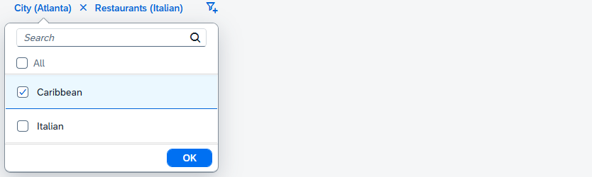

sap.m.FacetFilter control uses the FacetFilterList
and the FacetFilterItem controls to model facets and their associated
filters.The facet filter list aggregation is a collection of facet filter list objects, where each element in the collection represents a different facet. Likewise, the facet filter list items aggregation is a collection of facet filter item objects where each element in the collection represents a different filter items available for the facet.
The FacetFilterList control extends and supports all the features of the
sap.m.List control, for example swipe for action, growing
feature, remember selections and grouping.
The following properties of FacetFilterList affect the display of lists in
the FacetFilter control.
| Property | Description |
|---|---|
title |
Facet name |
mode |
Controls the selection mode for the list This property is overridden from |
sequence |
Controls the order in which the facets are displayed in the toolbar Lists appear in the toolbar in ascending order according to sequence (assuming left to right). Lists with a sequence less than 0 are placed last, not before facets with sequence of zero. Only active lists are displayed regardless of sequence setting. |
active |
Indicates if a facet filter list is active and should appear on the toolbar; this is only applicable for the simple type as all facet filter lists are active in the light type |
allCount |
The allCount value can be set to the number of filter matches in the
target data set given the currently selected filters for the facet filter
list. |
The list of properties is not complete. For a complete list, refer to the API documentation.
The FacetFilterItem control extends and supports all features of
sap.m.ListItemBase, for example item selection and counter.
FacetFilterItem provides the following properties:
| Property | Description |
|---|---|
text |
Filter item name |
key |
Unique identifier of the filter item; used to filter the target data set If |
You must either set the text or the key
property. Otherwise, the facet filter list can not properly maintain the
selected state of the item and an error message is logged to the console.
The following example shows how you use the controls. To build the face filter in the figure, use the code below the figure:

sap.ui.require([
"sap/m/FacetFilter",
"sap/m/FacetFilterList",
"sap/m/FacetFilterItem"
], function (FacetFilter, FacetFilterList, FacetFilterItem) {
const oFacetFilter = new FacetFilter({ // define FacetFilter Control
lists : [
new FacetFilterList({ // city facet
title : "City",
items : [
new FacetFilterItem({
text : "Waldorf",
key : "WDF"
}),
new FacetFilterItem({
selected : true, // filter is selected (from ListItemBase)
text : "Atlanta",
key : "ATL"
})
]
}),
new FacetFilterList({ // restaurant facet
title : "Restaurants",
items : [
new FacetFilterItem({
text : "Caribbean",
key : "CRB"
}),
new FacetFilterItem({
selected : true, // filter is selected (from ListItemBase)
text : "Italian",
key : "ITL"
})
]
})
]
});
});
The example does not have a model binding. A binding to the filter items is required for the search.